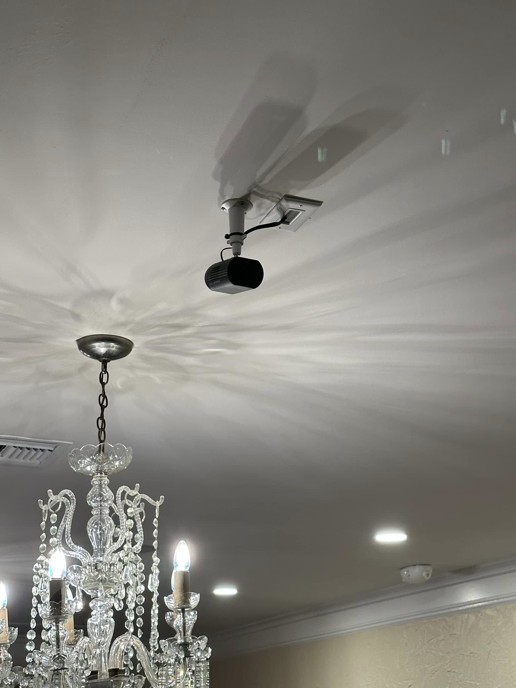

Khảo sát sự cố và sửa chữa nhỏ
TÌM ĐÚNG SỰ CỐ.
Khảo sát ổ cắm mất điện, đèn nhấp nháy và vấn đề khác của hệ thống hiện có. Chỉ sửa chữa nhỏ khi công việc cụ thể không cần giấy phép; không đi mạch mới, đi lại dây hay làm việc trên tủ điện hoặc nguồn điện vào nhà.
Moore Electric chỉ nhận công việc không cần giấy phép. Điều này phụ thuộc vào công việc cụ thể và quy định địa phương; tôi xác nhận phạm vi trước khi báo giá hoặc bắt đầu. Nếu cần giấy phép, tôi không nhận công việc đó.
Phạm vi công việc
Khảo sát ổ cắm mất điện, đèn nhấp nháy và vấn đề khác của hệ thống hiện có. Chỉ sửa chữa nhỏ khi công việc cụ thể không cần giấy phép; không đi mạch mới, đi lại dây hay làm việc trên tủ điện hoặc nguồn điện vào nhà.
Trước khi bắt đầu
Trước tiên xác nhận công việc cụ thể và yêu cầu giấy phép tại địa phương. Công việc cần giấy phép hoặc ngoài phạm vi này sẽ không được nhận.
Không cung cấp dịch vụ nâng cấp tủ điện hoặc nguồn điện vào nhà, đi mạch mới hay đi lại dây, mạch sạc xe điện, đấu nối máy phát điện hoặc lắp thiết bị chống quá áp tại tủ điện.
Phí đến khảo sát là $75, được báo trước khi lên đường và trừ vào tiền công phù hợp nếu quý khách thuê tôi. Công việc được báo giá bằng văn bản sau khảo sát và trước khi bắt đầu. Vật tư và phụ phí áp dụng được báo riêng từ trước.